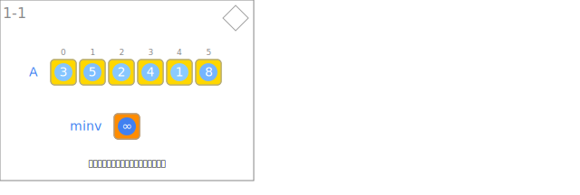
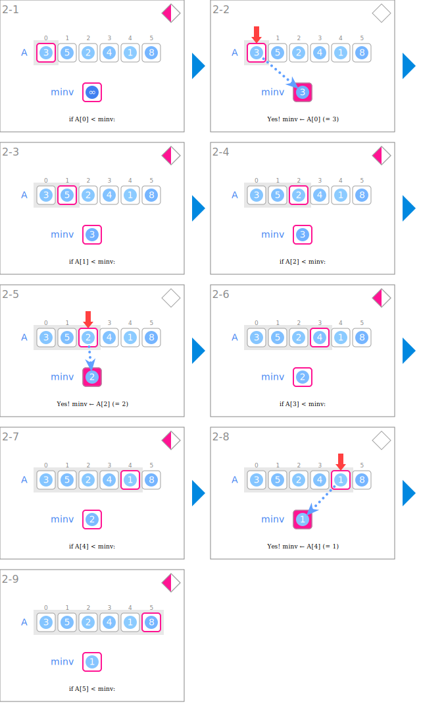
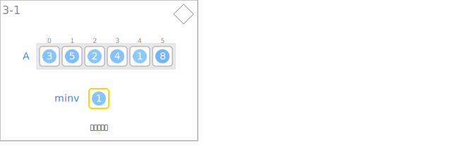

符号
| 数据 | ||
|---|---|---|
 |
输入的整数列 | A |
 |
最小值 | minv |
| 输入及初始化 | ||
|---|---|---|
 |
读取整数列 | |
 |
初始化最小值 | minv ← INF |
| 最小值的更新 | ||
 |
比较数组元素和最小值 | if A[i] < minv: |
 |
指向可更新为最小值的元素 | i |
 |
更新最小值 | minv ← A[i] |
 |
扩展已判断完毕的元素区间 | 区间[0, i] |
| 输出 | ||
 |
输出最小值 | |
动画
输入及初始化

最小值的更新

输出
